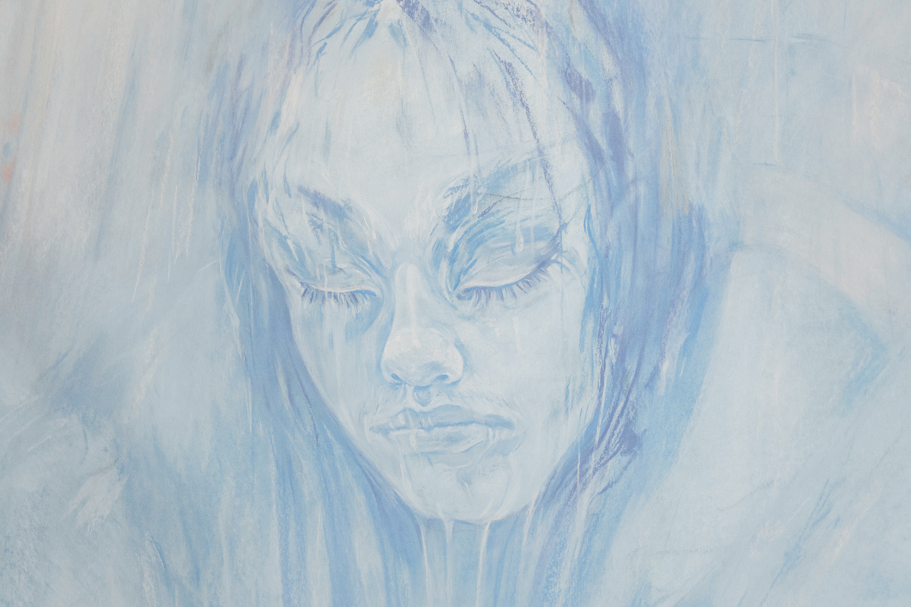
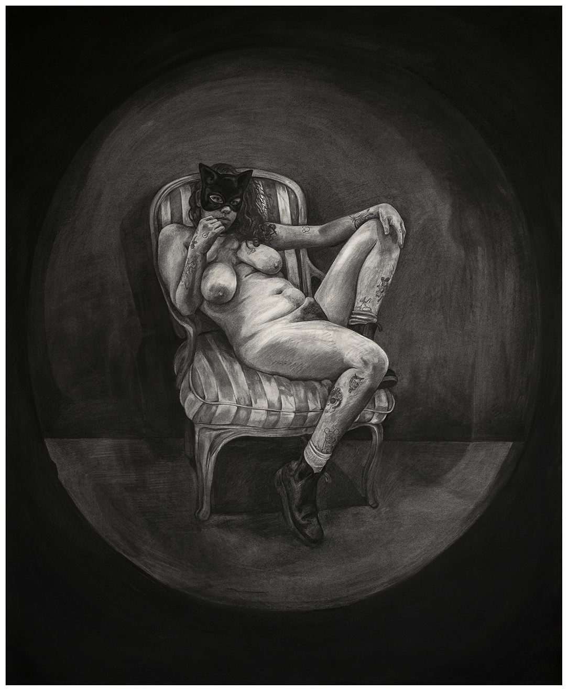
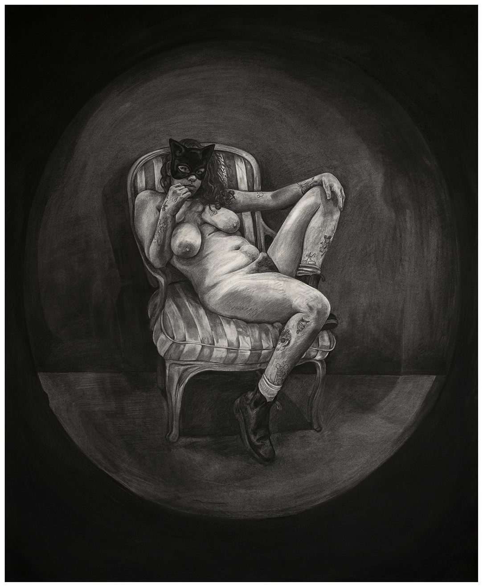
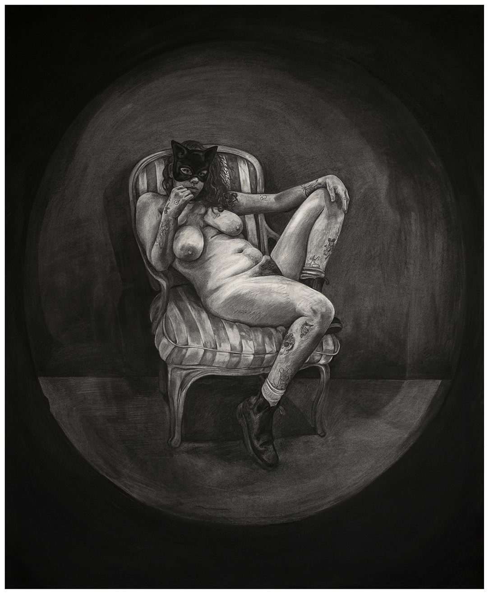

Alina Perez, Full of You pastel on paper, 2021, 75 × 52.2″">
Alina Perez, Full of You (detail) pastel on paper, 2021, 75 × 52.2″">
Alina Perez, Caught Between Her and I charcoal and pastel on paper, 2021, 93 × 69.5″">
Alina Perez, Caught Between Her and I (detail) charcoal and pastel on paper, 2021, 93 × 69.5″">
Alina Perez, Caught Between Her and I (detail) charcoal and pastel on paper, 2021, 93 × 69.5″">
Alina Perez, Self Portrait as Nude with Mask charocoal on paper, 2021, 63.5 × 77.5″">
Alina Perez, Self Portrait as Nude with Mask (detail) charocoal on paper, 2021, 63.5 × 77.5″">
Alina Perez, Self Portrait as Nude with Mask (detail) charocoal on paper, 2021, 63.5 × 77.5″">
Alina Perez (b. 1995, Miami, Florida)
Using charcoal and pastel on paper to create large-scale drawings, I am eager to explore how this direct, dry media can be a tool to create our past, present, and future. If memories - like drawings - are ultimately images, can the images I draw be just as important, just as real? How can a memory be true? Do images hold truth, and if I draw a memory I never had, can this drawn image perhaps change the past? If I draw myself holding you, will you feel it?
I find freedom and power through drawing, and just like the figures in my artwork, the core of my being doesn’t belong to any one time, place, or category. These beings are not bound by their experiences, they live more freely than you and I.
Tenderness, stillness, and self-reflection are at the root of both my practice and the way I carry myself in this world. By showcasing moments of pause and reflection, myself as the artist, the figures I depict, and the viewer are allowed to coexist and look both outside and within ourselves, with mutual respect.
 Alina Perez, Self Portrait as Nude with Mask
Alina Perez, Self Portrait as Nude with Mask